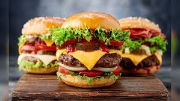
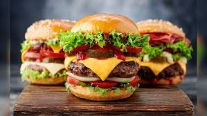

Burger Recipe
Burgers are a classic favorite, perfect for any occasion. This recipe will guide you through making a delicious homemade burger.
Ingredients:
- 1 pound ground beef (80% lean)
- 1 teaspoon salt
- 1/2 teaspoon black pepper
- 1/2 teaspoon garlic powder
- 4 hamburger buns
- 4 slices of cheese (optional)
- Lettuce, tomato, onion, pickles (for toppings)
- Ketchup, mustard, mayonnaise (for condiments)
Instructions:
- In a bowl, mix the ground beef with salt, pepper, and garlic powder until well combined.
- Divide the mixture into 4 equal portions and shape them into patties.
- Preheat a grill or skillet over medium-high heat. Cook the patties for about 4-5 minutes on each side, or until they reach your desired level of doneness.
- If using cheese, place a slice on each patty during the last minute of cooking to melt.
- Toast the hamburger buns on the grill or in a toaster.
- Assemble the burgers by placing a patty on each bun and adding your choice of toppings and condiments.
- Serve immediately and enjoy your homemade burgers!
Enjoy your delicious homemade Burger!

 
